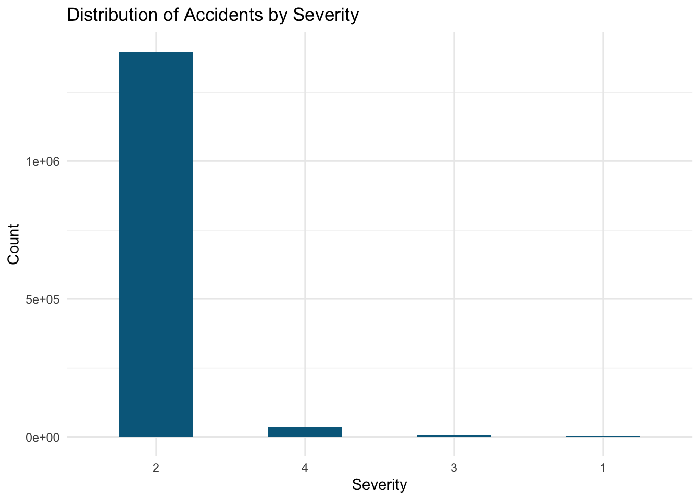
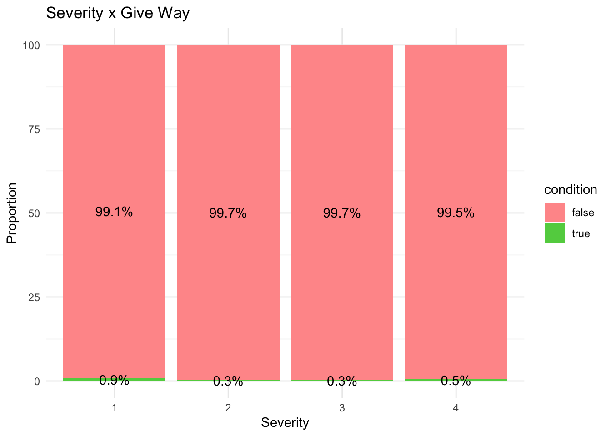
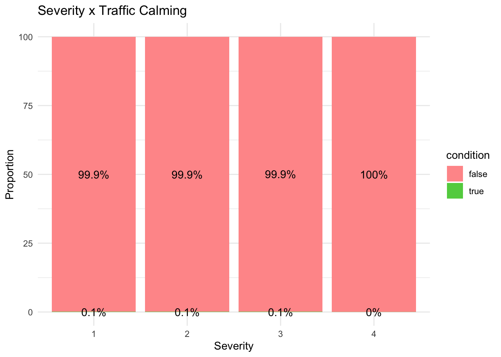
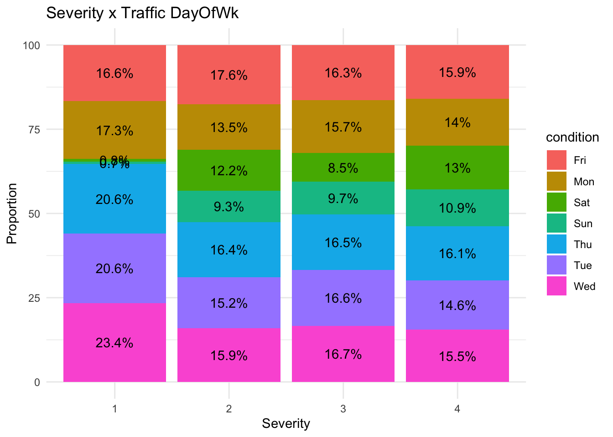

library(dplyr)
library(arrow)
library(tidyverse)
library(sparklyr)
library(dbplot)
library(corrr)
library(plotly)
library(ROSE)
seed_num <- 1234
sc <- spark_connect(master = "local", version = "3.4.0")DSA306 Group Project: Group 7
Project Introduction
We chose this
Dataset Introduction
EDA
Load accidents data in parquet format
# Reading Parquet
accidents <- spark_read_parquet(sc, path = "data/us_accidents")
glimpse(accidents)Rows: ??Warning in arrow_collect(object, ...): NAs introduced by coercion to integer
rangeColumns: 32
Database: spark_connection
$ Severity <int> 2, 2, 2, 2, 2, 2, 2, 2, 2, 2, 2, 2, 2, 2, 2, 2, …
$ Distance_Mi <dbl> 0.033, 0.025, 1.421, 0.168, 0.955, 0.863, 0.610,…
$ Weather_Timestamp <dttm> 2022-12-17 13:55:00, 2022-10-15 18:52:00, 2022-…
$ Humidity <dbl> 25, 45, 11, 55, 28, 61, 17, 62, 69, 51, 50, 29, …
$ Pressure_In <dbl> 28.85, 29.59, 29.40, 29.68, 29.86, 29.88, 29.29,…
$ Visibility_Mi <dbl> 10, 10, 10, 10, 10, 10, 10, 10, 10, 10, 10, 10, …
$ Wind_Speed_Mph <dbl> 5, 5, 17, 18, 5, 7, 5, 3, 10, 12, 12, 6, 8, 7, 6…
$ Precipitation_In <dbl> 0.00, 0.00, 0.00, 0.00, 0.00, 0.00, 0.00, 0.00, …
$ Amenity <lgl> FALSE, FALSE, FALSE, FALSE, FALSE, FALSE, FALSE,…
$ Bump <lgl> FALSE, FALSE, FALSE, FALSE, FALSE, FALSE, FALSE,…
$ Crossing <lgl> FALSE, FALSE, FALSE, TRUE, FALSE, FALSE, FALSE, …
$ Give_Way <lgl> FALSE, FALSE, FALSE, FALSE, FALSE, FALSE, FALSE,…
$ Junction <lgl> FALSE, FALSE, FALSE, FALSE, FALSE, FALSE, TRUE, …
$ No_Exit <lgl> FALSE, FALSE, FALSE, FALSE, FALSE, FALSE, FALSE,…
$ Railway <lgl> FALSE, FALSE, FALSE, FALSE, FALSE, FALSE, FALSE,…
$ Roundabout <lgl> FALSE, FALSE, FALSE, FALSE, FALSE, FALSE, FALSE,…
$ Station <lgl> FALSE, FALSE, FALSE, FALSE, FALSE, FALSE, FALSE,…
$ Stop <lgl> FALSE, FALSE, FALSE, FALSE, FALSE, FALSE, FALSE,…
$ Traffic_Calming <lgl> FALSE, FALSE, FALSE, FALSE, FALSE, FALSE, FALSE,…
$ Traffic_Signal <lgl> FALSE, FALSE, FALSE, TRUE, FALSE, FALSE, FALSE, …
$ Sunrise_Sunset <chr> "Day", "Day", "Day", "Day", "Day", "Day", "Day",…
$ Civil_Twilight <chr> "Day", "Day", "Day", "Day", "Day", "Day", "Day",…
$ Nautical_Twilight <chr> "Day", "Day", "Day", "Day", "Day", "Day", "Day",…
$ Astronomical_Twilight <chr> "Day", "Day", "Day", "Day", "Day", "Day", "Day",…
$ StartHr <int> 13, 18, 15, 17, 16, 12, 17, 21, 12, 15, 17, 13, …
$ DayOfWk <chr> "Sat", "Sat", "Fri", "Thu", "Mon", "Wed", "Wed",…
$ Duration <drtn> 25199 secs, 4502 secs, 7372 secs, 7955 secs, 17…
$ Temperature_C <dbl> 12.2, 20.0, 20.6, 30.6, 31.7, 9.4, 19.4, 25.0, 2…
$ Wind_Chill_C <dbl> 12.2, 20.0, 20.6, 30.6, 31.7, 7.8, 19.4, 25.0, 2…
$ TimeOfDay <chr> "Afternoon", "Evening", "Afternoon", "Afternoon"…
$ Weather_Condition_New <chr> "Fair", "Fair", "Fair", "Cloudy", "Fair", "Fair"…
$ Wind_Direction_New <chr> "N", "S", "N", "S", "N", "N", "E", "N", "W", "W"…Distribution of Severity
grouped_severity <- accidents |>
group_by(Severity) |>
summarise(Count = n()) |>
collect()
# Visualize with Spark
grouped_severity |>
mutate(Severity = as.factor(Severity), # Specify Severity to be factor (categorical)
Severity = reorder(Severity, desc(Count))) |> # Reorder in descending Count
ggplot(aes(x = Severity, y = Count)) +
geom_col(fill = "deepskyblue4", width = 0.5) +
theme_minimal() +
labs(title = "Distribution of Accidents by Severity")
Majority of the accidents are of Severity 2.
Number of Accidents by Time of Day
grouped_tod <- accidents |>
group_by(TimeOfDay) |>
summarise(Count = n()) |>
collect()
# Visualize with Spark
grouped_tod |>
mutate(TimeOfDay = as.factor(TimeOfDay), # Specify TimeOfDay to be factor (categorical)
TimeOfDay = reorder(TimeOfDay, desc(Count))) |> # Reorder in descending Count
ggplot(aes(x = TimeOfDay, y = Count)) +
geom_col(fill = "deepskyblue4", width = 0.5) +
theme_minimal() +
labs(title = "Distribution of Accidents by Time of Day")Surprisingly there are more accidents in the Afternoon, followed by the Morning.
Distribution of Accidents by StartHr
grouped_startHr <- accidents |>
group_by(StartHr) |>
summarise(Count = n()) |>
collect()
# Visualize with Spark
grouped_startHr |>
mutate(StartHr = as_factor(StartHr),
StartHr = reorder(StartHr, desc(Count))) |> # Reorder in descending Count
ggplot(aes(x = StartHr, y = Count)) +
geom_col(fill = "deepskyblue4", width = 0.5) +
theme_minimal() +
labs(title = "Distribution of Accidents by StartHr")We can see that most of the accidents start around 3-5 p.m. in the afternoon. Surprisingly, very few accidents happen past midnight.
Top 5 Weather Conditions
top_5_weather <- accidents |>
group_by(Weather_Condition_New) |>
summarise(Count = n()) |>
slice_max(order_by = Count, n = 5, with_ties = FALSE) |>
collect()
# Visualize with Spark
top_5_weather |>
mutate(Weather_Condition_New = as.factor(Weather_Condition_New),
Weather_Condition_New = reorder(Weather_Condition_New, desc(Count))) |>
ggplot(aes(x = Weather_Condition_New, y = Count)) +
geom_col(fill = "deepskyblue4", width = 0.5) +
theme_minimal() +
labs(title = "Top 5 Weather Conditions")Most of the accidents seem to occur most when weather is fair, followed by cloudy weather. Thus, weather condition might not be a crucial factor in causing accidents.
Explore the distribution of Visibility_Mi
grouped_vis <- accidents |>
group_by(Visibility_Mi) |>
summarise(Count = n()) |>
collect()
# Visualize with Spark
grouped_vis |>
mutate(Visibility_Mi = as.factor(Visibility_Mi), # Specify Visibility_Mi to be factor (categorical)
Visibility_Mi = reorder(Visibility_Mi, desc(Count))) |> # Reorder in descending Count
ggplot(aes(x = Visibility_Mi, y = Count)) +
geom_col(fill = "deepskyblue4", width = 0.5) +
theme_minimal() +
labs(title = "Distribution of Accidents by Visibility_Mi")Average Distance Affected Grouped by Severity
grouped_distancemi <- accidents |>
group_by(Severity) |>
summarise(Avg = mean(Distance_Mi)) |>
collect()Warning: Missing values are always removed in SQL aggregation functions.
Use `na.rm = TRUE` to silence this warning
This warning is displayed once every 8 hours.# Create Scatter Plot
grouped_distancemi |>
ggplot(aes(x = Severity, y = Avg, fill = !Severity %in% c(3, 4))) +
geom_col() +
theme_minimal() +
scale_fill_discrete(name = "Severity", labels = c("Severe: 3 or 4", "Not Severe: 1 or 2")) +
labs(title = "Average Distance Grouped by Severity", x = "Severity", y = "Average Distance (mi)")Average Temperature Grouped by Severity
grouped_temp <- accidents |>
group_by(Severity) |>
summarise(Avg = mean(Temperature_C)) |>
collect()
# Create Scatter Plot
grouped_temp |>
ggplot(aes(x = Severity, y = Avg)) +
geom_col(fill = "deepskyblue4", width = 0.5) +
theme_minimal() +
labs(title = "Average Temperature Grouped by Severity", x = "Severity", y = "Average Temperature (C)")Average Visibility Grouped by Severity
grouped_visibility <- accidents |>
group_by(Severity) |>
summarise(Avg = mean(Visibility_Mi)) |>
collect()
# Create Scatter Plot
grouped_visibility |>
ggplot(aes(x = Severity, y = Avg)) +
geom_col(fill = "deepskyblue4", width = 0.5) +
theme_minimal() +
# scale_fill_discrete(name = "Severity", labels = c("Severe: 3 or 4", "Not Severe: 1 or 2")) +
labs(title = "Average Visibility Grouped by Severity", x = "Severity", y = "Visibility (mi)")Average Wind Speed Grouped by Severity
grouped_wind_speed <- accidents |>
group_by(Severity) |>
summarise(Avg = mean(Wind_Speed_Mph)) |>
collect()
# Create Scatter Plot
grouped_wind_speed |>
ggplot(aes(x = Severity, y = Avg)) +
geom_col(fill = "deepskyblue4", width = 0.5) +
theme_minimal() +
labs(title = "Average Wind Speed Grouped by Severity", x = "Severity", y = "Wind_Speed (MPH)")Distribution by Temperature during the accidents
grouped_temp <- accidents |>
group_by(Temperature_C) |>
summarise(Count = n()) |>
collect()
# Visualize with Spark
grouped_temp |>
ggplot(aes(x = Temperature_C, y = Count)) +
geom_col(fill = "deepskyblue4", width = 0.5) +
theme_minimal() +
labs(title = "Distribution of Accident's Temperature")grouped_wind <- accidents |>
group_by(Wind_Speed_Mph) |>
summarise(Count = n()) |>
collect()
# Visualize with Spark
grouped_wind |>
ggplot(aes(x = Wind_Speed_Mph, y = Count)) +
geom_col(fill = "deepskyblue4", width = 0.5) +
theme_minimal() +
labs(title = "Distribution of Accident's Wind Speed")Accidents by Day of Week (descending)
grouped_DayOfWk <- accidents |>
group_by(DayOfWk) |>
summarise(Count = n()) |>
collect()
# Descending order
grouped_DayOfWk$DayOfWk <- factor(grouped_DayOfWk$DayOfWk, levels = grouped_DayOfWk$DayOfWk[order(grouped_DayOfWk$Count, decreasing = TRUE)])
# Visualize with Spark
grouped_DayOfWk |>
ggplot(aes(x = DayOfWk, y = Count)) +
geom_col(fill = "deepskyblue4", width = 0.5) +
theme_minimal() +
labs(title = "Distribution of Accidents by Day of Week")Most of the accidents seem to be happening during the weekdays, with fewest accidents on the weekends.
Exploring the more severe accidents
severe_accidents <- accidents |>
filter(Severity > 2)
# Time of day for severe accidents
grouped_tod <- severe_accidents |>
group_by(TimeOfDay) |>
summarise(Count = n()) |>
collect()
grouped_tod |>
mutate(TimeOfDay = as.factor(TimeOfDay), # Specify TimeOfDay to be factor (categorical)
TimeOfDay = reorder(TimeOfDay, desc(Count))) |> # Reorder in descending Count
ggplot(aes(x = TimeOfDay, y = Count)) +
geom_col(fill = "deepskyblue4", width = 0.5) +
theme_minimal() +
labs(title = "Distribution of Severe Accidents by Time of Day")# Weather conditions for severe accidents
top_5_weather <- severe_accidents |>
group_by(Weather_Condition_New) |>
summarise(Count = n()) |>
slice_max(order_by = Count, n = 5, with_ties = FALSE) |>
collect()
top_5_weather |>
mutate(Weather_Condition_New = as.factor(Weather_Condition_New),
Weather_Condition_New = reorder(Weather_Condition_New, desc(Count))) |>
ggplot(aes(x = Weather_Condition_New, y = Count)) +
geom_col(fill = "deepskyblue4", width = 0.5) +
theme_minimal() +
labs(title = "Top 5 Weather Conditions for Severe Accidents")
# Distribution of Visibility_Mi
grouped_vis <- severe_accidents |>
group_by(Visibility_Mi) |>
summarise(Count = n()) |>
collect()
# Visualize with Spark
grouped_vis |>
mutate(Visibility_Mi = as.factor(Visibility_Mi), # Specify Visibility_Mi to be factor (categorical)
Visibility_Mi = reorder(Visibility_Mi, desc(Count))) |> # Reorder in descending Count
ggplot(aes(x = Visibility_Mi, y = Count)) +
geom_col(fill = "deepskyblue4", width = 0.5) +
theme_minimal() +
labs(title = "Distribution of Accidents by Visibility_Mi for Severe Accidents")
Distribution of variables are similar despite filtering for more severe accidents.
Crosstab of Weekday and Time of Day
# Crosstab with DayOfWk and TimeOfDay
crosstab_Day_Time <- accidents |>
sdf_crosstab("DayOfWk", "TimeOfDay")
crosstab_Day_Time# Source: spark<?> [?? x 5]
DayOfWk_TimeOfDay Afternoon Evening Morning Night
<chr> <int> <int> <int> <int>
1 Sun 51573 20719 26754 35648
2 Wed 103406 26131 71994 28701
3 Sat 68712 25435 39872 41497
4 Thu 108767 26145 71092 30797
5 Mon 88084 22665 58349 26709
6 Tue 100384 25000 67175 26380
7 Fri 121952 32359 63156 35636# Crosstab with Severity and Weather_Condition_New
crosstab_Severity_Weather <- accidents |>
sdf_crosstab("DayOfWk", "Weather_Condition_New")
crosstab_Severity_Weather# Source: spark<?> [?? x 10]
DayOfWk_Weather_Condition_New Cloudy Fair `Fog/Haze/Smoke/Mist`
<chr> <int> <int> <int>
1 Wed 84525 118981 5064
2 Sun 46873 70274 2125
3 Sat 64365 88982 3952
4 Thu 86961 115472 5422
5 Mon 73504 97802 3266
6 Tue 81824 109608 4373
7 Fri 89039 130438 5222
# ℹ 6 more variables: `Hail/Dust/Sand/Tornado` <int>, `Heavy Rain` <int>,
# `Heavy Snow` <int>, Rainy <int>, Snow <int>, Windy <int>Crosstab of Severity and Sunrise_Sunset
# Crosstab with Severity and Sunrise_Sunset
crosstab_Severity_Sunrise_Sunset <- accidents |>
sdf_crosstab("Severity", "Sunrise_Sunset")
data.frame(crosstab_Severity_Sunrise_Sunset) |>
gather(key=condition, value = count, Night, Day) |>
group_by(Severity_Sunrise_Sunset) |>
mutate(percentage = count / sum(count) * 100) |>
ggplot(aes(x=Severity_Sunrise_Sunset, y=percentage, fill=condition)) +
geom_bar(stat = "identity", position = "stack") +
geom_text(aes(label = paste0(round(percentage, 1), "%")), position = position_stack(vjust = 0.5)) +
labs(title = "Severity x Sunrise_Sunset", x = "Severity", y = "Proportion") +
scale_fill_manual(values = c("Night" = "#FF9999", "Day" = "99FF99")) +
theme_minimal()Warning in arrow_collect(object, ...): NAs introduced by coercion to integer
range
Crosstab of Severity and Amenity
# Crosstab with Severity and Amenity
crosstab_Severity_Amenity <- accidents |>
sdf_crosstab("Severity", "Amenity")
data.frame(crosstab_Severity_Amenity) |>
gather(key=condition, value = count, false, true) |>
group_by(Severity_Amenity) |>
mutate(percentage = count / sum(count) * 100) |>
ggplot(aes(x=Severity_Amenity, y=percentage, fill=condition)) +
geom_bar(stat = "identity", position = "stack") +
geom_text(aes(label = paste0(round(percentage, 1), "%")), position = position_stack(vjust = 0.5)) +
labs(title = "Severity x Amenity", x = "Severity", y = "Proportion") +
scale_fill_manual(values = c("false" = "#FF9999", "true" = "99FF99")) +
theme_minimal()Warning in arrow_collect(object, ...): NAs introduced by coercion to integer
range
Crosstab of Severity and Bump
# Crosstab with Severity and Bump
crosstab_Severity_Bump <- accidents |>
sdf_crosstab("Severity", "Bump")
data.frame(crosstab_Severity_Bump) |>
gather(key=condition, value = count, false, true) |>
group_by(Severity_Bump) |>
mutate(percentage = count / sum(count) * 100) |>
ggplot(aes(x=Severity_Bump, y=percentage, fill=condition)) +
geom_bar(stat = "identity", position = "stack") +
geom_text(aes(label = paste0(round(percentage, 1), "%")), position = position_stack(vjust = 0.5)) +
labs(title = "Severity x Bump", x = "Severity", y = "Proportion") +
scale_fill_manual(values = c("false" = "#FF9999", "true" = "99FF99")) +
theme_minimal()Warning in arrow_collect(object, ...): NAs introduced by coercion to integer
rangeCrosstab of Severity and Crossing
# Crosstab with Severity and Crossing
crosstab_Severity_Crossing <- accidents |>
sdf_crosstab("Severity", "Crossing")
data.frame(crosstab_Severity_Crossing) |>
gather(key=condition, value = count, false, true) |>
group_by(Severity_Crossing) |>
mutate(percentage = count / sum(count) * 100) |>
ggplot(aes(x=Severity_Crossing, y=percentage, fill=condition)) +
geom_bar(stat = "identity", position = "stack") +
geom_text(aes(label = paste0(round(percentage, 1), "%")), position = position_stack(vjust = 0.5)) +
labs(title = "Severity x Crossing", x = "Severity", y = "Proportion") +
scale_fill_manual(values = c("false" = "#FF9999", "true" = "99FF99")) +
theme_minimal()Warning in arrow_collect(object, ...): NAs introduced by coercion to integer
rangeCrosstab of Severity and Give_Way
# Crosstab with Severity and Give_Way
crosstab_Severity_Give_Way <- accidents |>
sdf_crosstab("Severity", "Give_Way")
data.frame(crosstab_Severity_Give_Way) |>
gather(key=condition, value = count, false, true) |>
group_by(Severity_Give_Way) |>
mutate(percentage = count / sum(count) * 100) |>
ggplot(aes(x=Severity_Give_Way, y=percentage, fill=condition)) +
geom_bar(stat = "identity", position = "stack") +
geom_text(aes(label = paste0(round(percentage, 1), "%")), position = position_stack(vjust = 0.5)) +
labs(title = "Severity x Give Way", x = "Severity", y = "Proportion") +
scale_fill_manual(values = c("false" = "#FF9999", "true" = "99FF99")) +
theme_minimal()Warning in arrow_collect(object, ...): NAs introduced by coercion to integer
rangeCrosstab of Severity and Junction
# Crosstab with Severity and Junction
crosstab_Severity_Junction <- accidents |>
sdf_crosstab("Severity", "Junction")
data.frame(crosstab_Severity_Junction) |>
gather(key=condition, value = count, false, true) |>
group_by(Severity_Junction) |>
mutate(percentage = count / sum(count) * 100) |>
ggplot(aes(x=Severity_Junction, y=percentage, fill=condition)) +
geom_bar(stat = "identity", position = "stack") +
geom_text(aes(label = paste0(round(percentage, 1), "%")), position = position_stack(vjust = 0.5)) +
labs(title = "Severity x Junction", x = "Severity", y = "Proportion") +
scale_fill_manual(values = c("false" = "#FF9999", "true" = "99FF99")) +
theme_minimal()Warning in arrow_collect(object, ...): NAs introduced by coercion to integer
range
Crosstab of Severity and No_Exit
# Crosstab with Severity and No_Exit
crosstab_Severity_No_Exit <- accidents |>
sdf_crosstab("Severity", "No_Exit")
data.frame(crosstab_Severity_No_Exit) |>
gather(key=condition, value = count, false, true) |>
group_by(Severity_No_Exit) |>
mutate(percentage = count / sum(count) * 100) |>
ggplot(aes(x=Severity_No_Exit, y=percentage, fill=condition)) +
geom_bar(stat = "identity", position = "stack") +
geom_text(aes(label = paste0(round(percentage, 1), "%")), position = position_stack(vjust = 0.5)) +
labs(title = "Severity x No_Exit", x = "Severity", y = "Proportion") +
scale_fill_manual(values = c("false" = "#FF9999", "true" = "99FF99")) +
theme_minimal()Warning in arrow_collect(object, ...): NAs introduced by coercion to integer
rangeCrosstab of Severity and Railway
# Crosstab with Severity and Railway
crosstab_Severity_Railway <- accidents |>
sdf_crosstab("Severity", "Railway")
data.frame(crosstab_Severity_Railway) |>
gather(key=condition, value = count, false, true) |>
group_by(Severity_Railway) |>
mutate(percentage = count / sum(count) * 100) |>
ggplot(aes(x=Severity_Railway, y=percentage, fill=condition)) +
geom_bar(stat = "identity", position = "stack") +
geom_text(aes(label = paste0(round(percentage, 1), "%")), position = position_stack(vjust = 0.5)) +
labs(title = "Severity x Railway", x = "Severity", y = "Proportion") +
scale_fill_manual(values = c("false" = "#FF9999", "true" = "99FF99")) +
theme_minimal()Warning in arrow_collect(object, ...): NAs introduced by coercion to integer
rangeCrosstab of Severity and Station
# Crosstab with Severity and Station
crosstab_Severity_Station <- accidents |>
sdf_crosstab("Severity", "Station")
data.frame(crosstab_Severity_Station) |>
gather(key=condition, value = count, false, true) |>
group_by(Severity_Station) |>
mutate(percentage = count / sum(count) * 100) |>
ggplot(aes(x=Severity_Station, y=percentage, fill=condition)) +
geom_bar(stat = "identity", position = "stack") +
geom_text(aes(label = paste0(round(percentage, 1), "%")), position = position_stack(vjust = 0.5)) +
labs(title = "Severity x Station", x = "Severity", y = "Proportion") +
scale_fill_manual(values = c("false" = "#FF9999", "true" = "99FF99")) +
theme_minimal()Warning in arrow_collect(object, ...): NAs introduced by coercion to integer
rangeCrosstab of Severity and Stop
# Crosstab with Severity and Stop
crosstab_Severity_Stop <- accidents |>
sdf_crosstab("Severity", "Stop")
data.frame(crosstab_Severity_Stop) |>
gather(key=condition, value = count, false, true) |>
group_by(Severity_Stop) |>
mutate(percentage = count / sum(count) * 100) |>
ggplot(aes(x=Severity_Stop, y=percentage, fill=condition)) +
geom_bar(stat = "identity", position = "stack") +
geom_text(aes(label = paste0(round(percentage, 1), "%")), position = position_stack(vjust = 0.5)) +
labs(title = "Severity x Stop", x = "Severity", y = "Proportion") +
scale_fill_manual(values = c("false" = "#FF9999", "true" = "99FF99")) +
theme_minimal()Warning in arrow_collect(object, ...): NAs introduced by coercion to integer
rangeCrosstab of Severity and Traffic_Calming
# Crosstab with Severity and Traffic_Calming
crosstab_Severity_Traffic_Calming <- accidents |>
sdf_crosstab("Severity", "Traffic_Calming")
data.frame(crosstab_Severity_Traffic_Calming) |>
gather(key=condition, value = count, false, true) |>
group_by(Severity_Traffic_Calming) |>
mutate(percentage = count / sum(count) * 100) |>
ggplot(aes(x=Severity_Traffic_Calming, y=percentage, fill=condition)) +
geom_bar(stat = "identity", position = "stack") +
geom_text(aes(label = paste0(round(percentage, 1), "%")), position = position_stack(vjust = 0.5)) +
labs(title = "Severity x Traffic Calming", x = "Severity", y = "Proportion") +
scale_fill_manual(values = c("false" = "#FF9999", "true" = "99FF99")) +
theme_minimal()Warning in arrow_collect(object, ...): NAs introduced by coercion to integer
rangeCrosstab of Severity and Traffic_Signal
# Crosstab with Severity and Traffic_Signal
crosstab_Severity_Traffic_Signal <- accidents |>
sdf_crosstab("Severity", "Traffic_Signal")
data.frame(crosstab_Severity_Traffic_Signal) |>
gather(key=condition, value = count, false, true) |>
group_by(Severity_Traffic_Signal) |>
mutate(percentage = count / sum(count) * 100) |>
ggplot(aes(x=Severity_Traffic_Signal, y=percentage, fill=condition)) +
geom_bar(stat = "identity", position = "stack") +
geom_text(aes(label = paste0(round(percentage, 1), "%")), position = position_stack(vjust = 0.5)) +
labs(title = "Severity x Traffic Signal", x = "Severity", y = "Proportion") +
scale_fill_manual(values = c("false" = "#FF9999", "true" = "99FF99")) +
theme_minimal()Warning in arrow_collect(object, ...): NAs introduced by coercion to integer
range
Crosstab of Severity and Sunrise_Sunset
# Crosstab with Severity and Sunrise_Sunset
crosstab_Severity_Sunrise_Sunset <- accidents |>
sdf_crosstab("Severity", "Sunrise_Sunset")
data.frame(crosstab_Severity_Sunrise_Sunset) |>
gather(key=condition, value = count, Night, Day) |>
group_by(Severity_Sunrise_Sunset) |>
mutate(percentage = count / sum(count) * 100) |>
ggplot(aes(x=Severity_Sunrise_Sunset, y=percentage, fill=condition)) +
geom_bar(stat = "identity", position = "stack") +
geom_text(aes(label = paste0(round(percentage, 1), "%")), position = position_stack(vjust = 0.5)) +
labs(title = "Severity x Sunrise_Sunset", x = "Severity", y = "Proportion") +
theme_minimal()Warning in arrow_collect(object, ...): NAs introduced by coercion to integer
rangeCrosstab of Severity and TimeOfDay
# Crosstab with Severity and TimeOfDay
crosstab_Severity_TimeOfDay <- accidents |>
sdf_crosstab("Severity", "TimeOfDay")
data.frame(crosstab_Severity_TimeOfDay) |>
gather(key=condition, value = count, Afternoon, Evening, Morning, Night) |>
group_by(Severity_TimeOfDay) |>
mutate(percentage = count / sum(count) * 100) |>
ggplot(aes(x=Severity_TimeOfDay, y=percentage, fill=condition)) +
geom_bar(stat = "identity", position = "stack") +
geom_text(aes(label = paste0(round(percentage, 1), "%")), position = position_stack(vjust = 0.5)) +
labs(title = "Severity x Traffic TimeOfDay", x = "Severity", y = "Proportion") +
theme_minimal()Warning in arrow_collect(object, ...): NAs introduced by coercion to integer
rangeCrosstab of Severity and DayOfWk
# Crosstab with Severity and DayOfWk
crosstab_Severity_DayOfWk <- accidents |>
sdf_crosstab("Severity", "DayOfWk")
data.frame(crosstab_Severity_DayOfWk) |>
gather(key=condition, value = count, Mon, Tue, Wed, Thu, Fri, Sat, Sun) |>
group_by(Severity_DayOfWk) |>
mutate(percentage = count / sum(count) * 100) |>
ggplot(aes(x=Severity_DayOfWk, y=percentage, fill=condition)) +
geom_bar(stat = "identity", position = "stack") +
geom_text(aes(label = paste0(round(percentage, 1), "%")), position = position_stack(vjust = 0.5)) +
labs(title = "Severity x Traffic DayOfWk", x = "Severity", y = "Proportion") +
# scale_fill_manual(values = c("false" = "#FF9999", "true" = "99FF99")) +
theme_minimal()Warning in arrow_collect(object, ...): NAs introduced by coercion to integer
rangeCrosstab of Severity and Wind_Direction_New
# Crosstab with Severity and Wind_Direction_New
crosstab_Severity_Wind_Direction_New <- accidents |>
sdf_crosstab("Severity", "Wind_Direction_New")
data.frame(crosstab_Severity_Wind_Direction_New) |>
gather(key=condition, value = count, CALM, VAR, N, S, E, W) |>
group_by(Severity_Wind_Direction_New) |>
mutate(percentage = count / sum(count) * 100) |>
ggplot(aes(x=Severity_Wind_Direction_New, y=percentage, fill=condition)) +
geom_bar(stat = "identity", position = "stack") +
geom_text(aes(label = paste0(round(percentage, 1), "%")), position = position_stack(vjust = 0.5)) +
labs(title = "Severity x Wind_Direction_New", x = "Severity", y = "Proportion") +
theme_minimal()Warning in arrow_collect(object, ...): NAs introduced by coercion to integer
range
Summary statistics for Numerical Columns
options(max.print = 100)
## getting columns that are numerical
numerical_col_names_accidents <- accidents |>
select_if(is.numeric) |> colnames()
summary_stats <- accidents |>
sdf_describe(cols = numerical_col_names_accidents)
summary_stats# Source: spark<?> [?? x 11]
summary Severity Distance_Mi Humidity Pressure_In Visibility_Mi Wind_Speed_Mph
<chr> <chr> <chr> <chr> <chr> <chr> <chr>
1 count 1445092 1445092 1445092 1445092 1445092 1445092
2 mean 2.05776… 1.04092881… 61.6815… 29.3758631… 9.1585872110… 7.74100195696…
3 stddev 0.32980… 2.12004365… 22.8953… 1.13065030… 2.4015489506… 5.55272977307…
4 min 1 0.002 1.0 0.0 0.0 0.0
5 max 4 336.570007… 100.0 58.63 90.0 190.0
# ℹ 4 more variables: Precipitation_In <chr>, StartHr <chr>,
# Temperature_C <chr>, Wind_Chill_C <chr>Relationship between Severity and Distance_Mi
# Relationship between Severity and Distance_Mi
prop_data <- accidents |>
group_by(Distance_Mi, Severity) |>
summarize(n = n()) |>
group_by(Severity) |>
summarize(count = sum(n), dis = sum(Distance_Mi * n) / sum(n)) |>
mutate(se = sqrt(dis * (1-dis) / count)) |>
collect()`summarise()` has grouped output by "Distance_Mi". You can override using the
`.groups` argument.
`summarise()` has grouped output by "Distance_Mi". You can override using the
`.groups` argument.
`summarise()` has grouped output by "Distance_Mi". You can override using the
`.groups` argument.prop_data# A tibble: 4 × 4
Severity count dis se
<int> <int> <dbl> <dbl>
1 3 8405 3.84 NaN
2 1 1158 1.58 NaN
3 2 1397418 1.03 NaN
4 4 38111 0.937 0.00124Correlation Matrix for Numerical Values
New names:
Correlation method: 'pearson' Missing treated using: 'pairwise.complete.obs'
• `` -> `...1`
• `` -> `...2`
• `` -> `...3`
• `` -> `...4`
• `` -> `...5`
• `` -> `...6`
• `` -> `...7`
• `` -> `...8`
• `` -> `...9`
• `` -> `...10`There is little to no collinearity between predictors of accidents, aside from the high correlation between Wind_Chill_C and Temperature_C. Thus, we will only be keeping the column Temperature_C as it is more robust and easier to understand, whilst providing sufficient information.